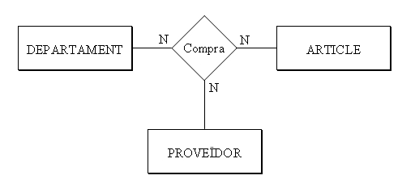
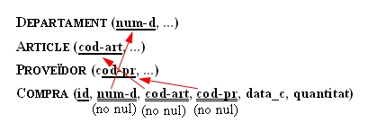

4.7 Relacions ternàries
En una relació ternària o superior construirem una nova taula, on inclourem com a claus externes les claus primàries de totes les entitats, i a més els atributs de la relació.
Habitualment, la clau principal de la nova taula serà la combinació de totes les claus principals de les entitats. Ocasionalment, si alguna entitat participa amb cardinalitat 1, la clau principal d'aquesta entitat no entraria a formar part de la clau principal de la nova taula.
Igual que en el cas de les relacions M:N, ens haurem de preguntar si és suficient amb la clau primària generada o si s'haurà d'incloure algun altre camp.
En l'exemple que vam posar de relació ternària, suposant els atributs de la relació la data de compra i la quantitat:


On hem posat totes les claus externes formant part de la clau principal, ja que totes entren amb cardinalitat N. Però no teníem prou amb aquesta clau principal, ja que el mateix departament pot comprar el mateix article al mateix proveïdor més d'una vegada. Com no teníem prou, hem posat un altre camp.
Seria moment, segurament, de substituir la clau principal que està formada per 4 camps, ja que en són massa.
Posaríem una altra clau principal, però les claus externes continuarien sent- ho, i a més serien no nules:

Llicenciat sota la Llicència Creative Commons Reconeixement NoComercial CompartirIgual 3.0